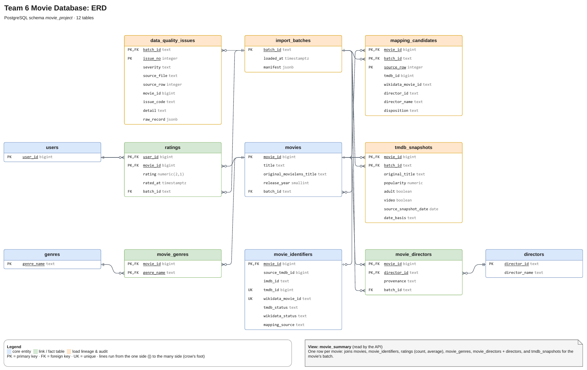

PART I · MY PRIMARY WORK
Collect & validate
Download or query source records, connect movie identifiers, validate outputs, and hand off standardized CSV files.
Data engineering · Portfolio case study
Preparing traceable, consistent movie data for a team-built PostgreSQL database and movie query service.
Explore my workMy contribution
I was responsible for Part I: source data preparation and validation. I also tested the integrated project and helped the team resolve submission issues.
Prepared movie, rating, popularity, and director data from three sources. Delivered four CSV files with consistent column names and identifiers for the database handoff.
Validated schemas, identifiers, duplicates, and cross-file references. Kept original downloads, query responses, manifests, and known mapping issues so results could be inspected and reproduced.
Ran the offline Docker pipeline, checked the API and web interface, and helped diagnose ZIP extraction and API startup issues before the final team submission.
Project workflow
The team combined a reproducible data collection process, a relational database, and an API with a web interface.
PART I · MY PRIMARY WORK
Download or query source records, connect movie identifiers, validate outputs, and hand off standardized CSV files.
PART II · TEAM COMPONENT
Transform the CSV outputs, review ambiguous mappings, and load a PostgreSQL schema with quality and batch records.
PART III · TEAM COMPONENT
Serve movie results through an API and web interface with genre and rating filters, sorting, pagination, and CSV export.
| Output file | Rows | What a record represents |
|---|---|---|
| MovieLens_Movies.csv | 9,742 | A movie with its source title, genres, and TMDb mapping |
| MovieLens_Ratings.csv | 100,836 | An anonymous user's rating of a movie |
| TMDb_Movies.csv | 9,620 | A matching movie in the selected TMDb export |
| Wikidata_Directors.csv | 10,517 | A returned movie–director combination, or a matched item without a director |
Counts describe the bundled source snapshot. Director rows are not a count of distinct movies or directors.
Validation & reproducibility
A successful download is only the beginning. Source records need consistent structure, valid relationships, and a way to trace where they came from.
Check column names and order, identifier formats, duplicates, and rating-to-movie references.
Check ratings from 0.5 to 5 in half-star increments and finite, nonnegative TMDb popularity.
Retain original files and responses. Record output row counts, schemas, and SHA-256 checksums in a manifest.
Support validation-only checks, offline rebuilding from saved sources, and online refreshes.
My verification run completed extraction, validation, transformation, tests, loading, and post-load checks. The team database contained 9,742 movies, 100,836 ratings, and 610 users.
A science-fiction query requiring at least 50 ratings and an average rating of at least 4 returned HTTP 200 and 12 matching movies. With the result limit set to five, the first result was Star Wars: Episode IV – A New Hope, with 251 ratings and a 4.231 average.
This is a recorded result from the project verification run. The public demo preserves our original movie search page and queries the submitted data snapshot in your browser. The submitted project runs FastAPI and PostgreSQL in Docker.
Team database design
The integrated database separates movies, ratings, genres, directors, external identifiers, and import records. The schema also retains mapping candidates and data-quality issues.

Team ERD · Database work by Chenye Shen; diagram redrawn by Nelson Yanes-Nunez.
I exported the shared diagram as a single-page PDF.
What the data can tell us
MovieLens ratings are historical. TMDb popularity describes a specific snapshot, not a movie's rating, revenue, or audience count.
Director names and external mappings can be missing or ambiguous. Part I preserved source records and flagged seven movie entries for mapping review.
Multiple genres and directors can multiply rows. Rating aggregates should be calculated before adding those relationships.
Collaboration
This was a three-person course project. The complete application was a shared deliverable; my primary ownership was data collection and validation.
Part I source data preparation and validation, documentation, integrated testing, ERD PDF export, and final submission checks.
Part II data cleaning, PostgreSQL schema and loading, mapping review, database documentation, and report finalization.
Part III automation, API and web interface, Docker integration, ERD redraw, and final project packaging.
Source documentation